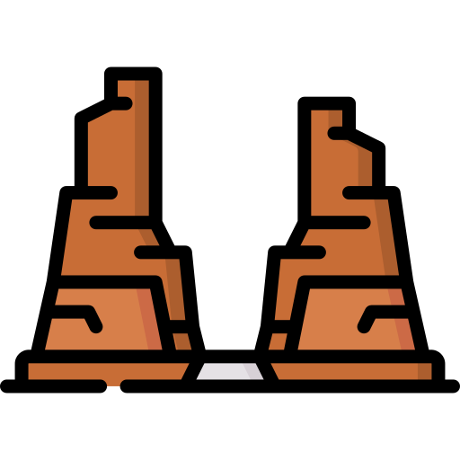
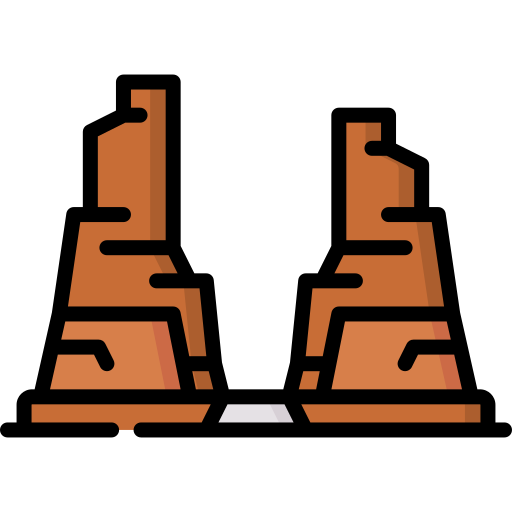

Education: I have a master degree in telecommunication and computer networking. Computer networking is my main focus.
Background: I once stumbled on a video explaining the different aspects of audio production, Immediately I felt inspired and since then and spent most of my spare time exploring all the different aspects of audio production. That gave me an in-depth understanding of the audio signal. At the same time, I was curious about the development side of the audio software, so I spent so much time going through different DSP, and audio software development books. I have been fascinated by the advances in AI enabled audio software, over the last few years. I did my master thesis on Neural Networks, focusing on their working machineries, intuitions and the different optimization and regularization techniques. Currently I am exploring the frontier of AI for audio enhancement namely denoising and bandwidth-extension using deep generative models mainly AutoEncoder and Variational AE.
I'm a strong proponent of interdisciplinary thinking. Machine learning is wonderful, and while it is necessary, it alone is not sufficient to spot potentials for new applications. As an audio enthusiast and engineer who took rigorous DSP courses, I believe it is important to have the ability to look at the field of computing from a higher perspective and be observant to the surrounding, open-minded towards new ideas, and creative enough to spot potentials of new developments.

I am a Python user, I love the language, its ecosystem. I use it for automation, learn and implement many math DSP concepts and developing ML models. I started picking up the language since 2019 after stumbling on Neural Networks, I use these libraries regularly: Librosa NumPy SciPy Pandas Matplotlib Keras TensorFlow
I love computer networking, I have a studied the entire CCNA Routing and Switching, and the VoIP tracks, and spent a lot of time practicing Labs, I am well familiar with CISCO IOS. I have particular interest in collaboration technologies. I also enjoy packet analysis with WireShark.

I am not a Web Developer, and I don't intend to be, This was just a side project of mine to learn the basics of Web development that I did, in the summer of 2019 I if I remember correctly. In fact this website was built using only basic HTML and CSS, No JavaScript, and if you try to access it using mobile, it won't show up correctly. I've just updated it with valid information about me. As you can probably tell, the theme of this website was inspired by the desert environment where I live
As I mentioned before I did my master thesis on Neural Networks, with a particular focus on their theoretical aspects. Here's my thesis
I also write about some of their aspects, things like bench-marking activation functions, optimizers, visualizing CNN.I am interested in speech enhancement mainly bandwidth-extension (aka Audio Super-Resolution), speech denoising using convolutional Auto-Encoder and variational AE, because it represents the fusion of two fields that I love, AI and DSP. Currently, I am interested in employing Dynamic Variational-Autoencoder for these tasks, as well as exploring the effectiveness of different input features (time and frequency domain features) for the bandwidth-extension, and try to answer the question of; is it feasible to combine both domain features and still maintain efficiency for training and testing, and how we can use multi-task learning for that.
I have particular interest in DSP, due to my background in Audio production and Engineering, I often write about and implement DSP concept, like Aliasing, Quantization, Interpolation, Fourier Transformation, Convolution, Digital Filters...
I Love Music and I Used to Make my Own, I used FL studio and Studio One interchangeably, as well as Native Instruments products (Massive, Reaktor, Kontakt), Fabfilter products, Serum, Sylenth1 and many other tools.
I Don't share my Music. But here are some demos if are curious.